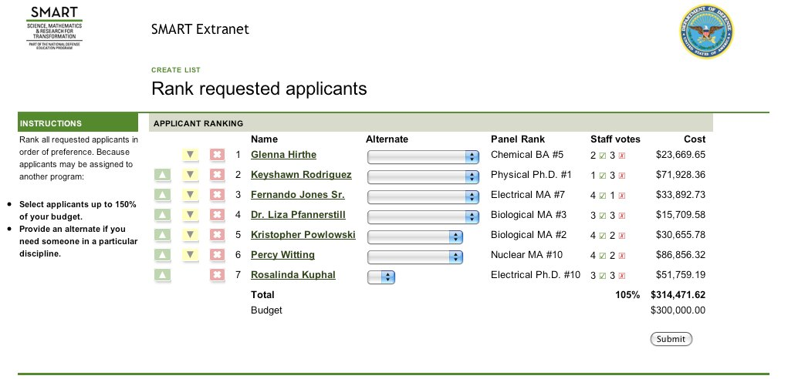
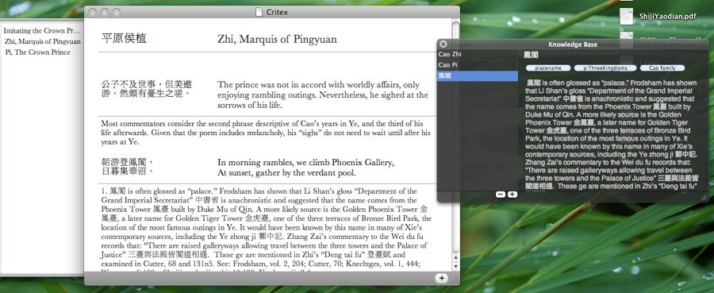
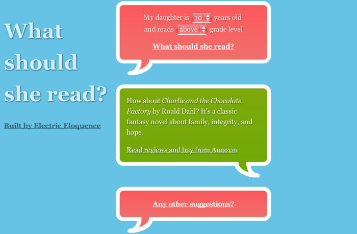
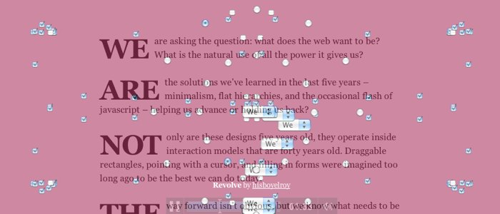

When was the last time a web site convinced you of an idea you disagreed with? Or encouraged you to stop and reflect on your life? Or did anything, in fact, to make your more human?
We don’t yet know what the web wants to be. We are still experimenting with its form—how to communicate, how to persuade, how to educate.
But we do know where the new ideas will come from, the same place they always come from: the marriage of technical mastery, design vision, and human empathy. Web designers who want to forge ahead will need to know every cranny of JavaScript and loadtime performance, they will need to understand color theory and typography, and they will need to care about the people who use their creations.
I’ve spent the last ten years developing precisely those skills. Now it’s time to do something awesome.
A few recent highlights from ten years of web design and development.
The SMART program awards fellowships that pay for student researchers to attend graduate school if they agree to work for the Department of Defense after they graduate.
The selection portal pairs fellowship-winners with the right labs based on educational and demographic information, their preferences, and some internal politics.
Prioritizing applicants by discipline, expert rankings, lab staff votes, and budget constraints.
I was the sole designer, working with the program’s staff to determine requirements, create a simple domain model, and design HTML mockups for implementation. I designed a component library of buttons, typographic styles, and patterns for displaying tables, nesting, and hierarchies.
The most involved screen allowed top-level staff to make final decisions based on thousands of requests from the applicants and labs. I developed a rich iconographic system that allowed them to visualize all of this data, interact with it directly, and see the results of their changes immediately.
I also managed the development schedule and testing of the final application prior to on-time delivery.
Deco brings the benefits of design moodboards online, allowing real-time collaboration on design research and documentation. Multiple users upload, organize, and play with images, videos, and labels until they get a feel for what the design should be.
Using example images improves client communication. Most clients don’t have the design vocabulary to describe what they want, but can quickly judge which examples fit their vision.
The Deco prototype is also a meditation on how minor advances in web technology can lead to major advances in the ease of interaction:
I designed, built and deployed Deco in two months of after-work free time.
My graduate studies centered on Classical Chinese poetry of the third to eighth centuries. The resources for doing this research are, necessarily, dusty old books and a handful of poorly-digitized databases.
Using Critex to typeset a poem with translation, textual criticism, and commentary.
I built experiments for finding and publishing research in the digital medium:
My wife teaches middle and high school English, so students and parents are always asking her for book suggestions. When we started building a site of her book reviews and discussion questions, we considered a lot of ways of navigating: browsing like Amazon, recommendations like Netflix, or categories like Yahoo. These systems help users make choices and emphasize the wide range of possible answers.
But parents don’t want choices, they already face the thousands of young adult books in libraries and bookstores. So we simplified the site to a core dialogue. Parents ask a question and get one quality answer. If their daughter has already read that book, they can ask for another.
A simple dialogue on What should she read?
Because the site is a dialogue, it needs to be polite:
I rarely get to control a complete project—design, coding, tweaking, and testing. And I rarely have the time to achieve this level of attention to detail. But when I see the results—girls excited to finish one book and get the next recommendation—I am inspired to spend the same care and instill the same delight with my everyday projects.
During chemotherapy and other cancer treatments, patients are told to expect a wide variety of side-effects. Many patients have difficulty with their short-term memory, and grow complacent with the expectation of health difficulties, so they never report their problems.
I was the staff web developer on a medical research project that asked patients to regularly fill out an online health survey. I built the survey software and the algorithms for producing statistical data. I also designed an interactive self-help tool for viewing changes in symptoms, making journal entries about the treatment, and getting advice on self-care.
The research results were clear. Patients who regularly and systematically thought about their symptoms were more likely to insist on treatment and get help from their doctor. Patients who frequently looked at the charts of their symptoms often noticed patterns that doctors missed.
Some of the patients earned months or years on their life and substantially reduced the suffering they experienced while in treatment.
I do a lot of work: in-house, for clients, on contract, as a volunteer. Normally someone comes to me with a plan already half thought-out. I love to solve their problems, and am glad that even people outside of the programming and design communities have established mental models of what web design can be.
The closing sequence of We are not the web.
But occasionally I need to stop normal work, throw away normal metaphors, and deconstruct the boxes and form controls that I try to imbue with personality. "We are not the web" is a brief interactive essay that expressed some pent-up frustration and helped me think through how to broaden my view of web design.